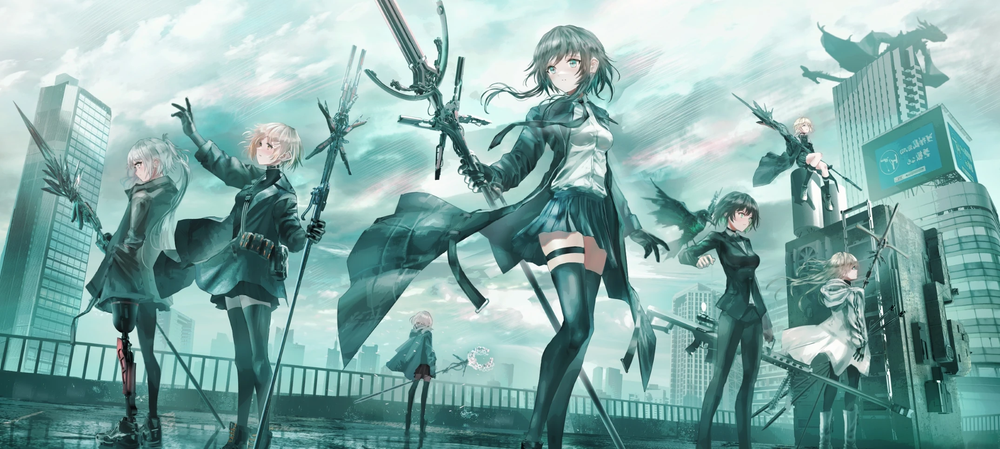

ERE / PERSONAL BLOG个人博客 INDEX / 00
PROFILE / 001
ererethka.
写代码，打游戏，偶尔记点笔记。
这里放着我的学习记录和一些收藏。
⌘ 代码✧ 学术△ 游戏

PERSONAL FIELD NOTES＋
代码、游戏和日常你好，
欢迎来逛逛。
写下遇到的问题，也收下喜欢的风景。
随便看看 ↗ ReSURGUM · © SWAV ↗
RECENT / DEVELOPMENT RECORDS
最近的笔记
全部技术笔记 ↗PRIVATE COLLECTION技术笔记需要登录后查看
02 / SELECTED FRAGMENTS
喜欢的画面 / 02
查看全部相册 ↗博客更新
- 更新站点标记，重新整理基础样式。
- 更换插画，调整文案和页面细节。
- 增加笔记检索、分类和阅读工具。
- 重新设计页面，支持深色与浅色主题。
查看更新日志 ↗
05 / ABOUT ME
关于我
这是 ererethka 的个人博客。主要用来整理技术笔记，也会放一些游戏记录和喜欢的插画。
更新随缘。有空时，就来写一点。
在 GitHub 找到我 ↗